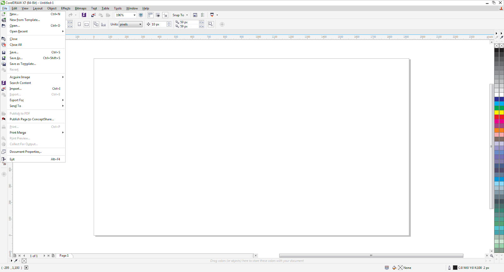

Tutorial CorelDraw#
Keyboard Shortcut#
Kita dapat menggunakan cara pintas keyboard (juga dikenal sebagai hotkeys) untuk segera mengaktifkan banyak perintah menu dan alat-alat di CorelDRAW X7.
Sebagai contoh adalah cara pintas keyboard (Ctrl + N) untuk memulai sebuah proyek baru (New).

Contoh lain adalah cara pintas keyboard (F10) untuk mengaktifkan alat "Shape". Contoh lain dari cara pintas keyboard untuk beberapa tugas yang biasa dilakukan misalnya:
File
New Ctrl + N
Open Ctrl + O
Save Ctrl + S
Save As Ctrl + Shift + S
Import Ctrl + I
Export Ctrl + E
Print Ctrl + P
Exit Alt + F4
Edit
Undo Ctrl + Z
Redo Ctrl + Shift + Z
Repeat Ctrl + R
Cut Ctrl + X
Copy Ctrl + C
Paste Ctrl + V
Delete Delete
Symbol > Symbol Manager Ctrl + F3
Duplicate Ctrl + D
Step and Repeat Ctrl + Shift + D
Find and Replace > Find Objects Ctrl + F
Object Properties Alt + Enter
View
Full-Screen Preview F9
View Manager Ctrl + F2
Snap to > Document Grid Ctrl + Y
Snap to > Objects Alt + Z
Dynamic Guides Alt + Shift + D
Alignment Guides Alt + Shift + A
Arrange
Transformations > Position Alt + F7
Transformations > Rotate Alt + F8
Transformations > Scale Alt + F9
Transformations > Size Alt + F10
Align and Distribute > Align Left L
Align and Distribute > Align Right R
Align and Distribute > Align Top T
Align and Distribute > Align Bottom B
Align and Distribute > Align Centers Horizontally E
Align and Distribute > Align Centers Vertically C
Align and Distribute > Center to Page P
Order > To front of Page Ctrl + Home
Order > To Back of Page Ctrl + End
Order > To Front of Layer Shift+ Page Up
Order > To Back of Layer Shift+ Page Down
Order > Forward One Ctrl + Page Up
Order > Backward One Ctrl + Page Down
Group Ctrl + G
Ungroup Ctrl + U
Combine Ctrl + L
Break Apart Ctrl + K
Convert to Curves Ctrl + Q
Convert Outline to Object Ctrl + Shift + Q
Effects
Adjust > Brightness/Contrast/Intensity Ctrl + B
Adjust > Color Balance Ctrl + Shift + B
Adjust > Hue/saturation/Lightness Ctrl + Shift + U
Contour Ctrl + F9
Envelope Ctrl + F7
Lens Ctrl + F3
Text
Text Properties Ctrl + T
Edit Text Ctrl + Shift + T
Insert Symbol Character Ctrl + F11
Insert Formating Code > Non-breaking Hypen Ctrl + Shift + -
Insert Formating Code > Optional Hypen Ctrl + -
Align to Baseline Alt + F12
Writing Tools > Spell Check Ctrl + F12
Convert Ctrl + F8
Tools
Options Ctrl + J
View Manager Ctrl + F2
Color Styles Ctrl + F6
Object Styles Ctrl + F5
Macros > Macro Manager Alt + Shift + F11
Macros > Macro Editor Alt + F11
Macros > VSTA Editor Alt + Shift + F12
Macros > Stop Recording Ctrl + Shift + O
Macros > Record Temporary Macro Ctrl + Shift + R
Macros > Run Temporary Macro Ctrl + Shift + P
Help
Help Topics F1
Window
Refresh Window Ctrl + W
Other
Nudge Arrow keys
Super Nudge Shift + Arrow Keys
Micro Nudge Ctrl + Arrow Keys
Scroll Alt + Arrow Keys
Catatan: Untuk daftar lengkap shortcut keyboard, lihat CorelDRAW X7 Quick Start Guide yang bisa didownload disini